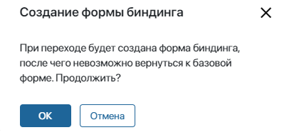
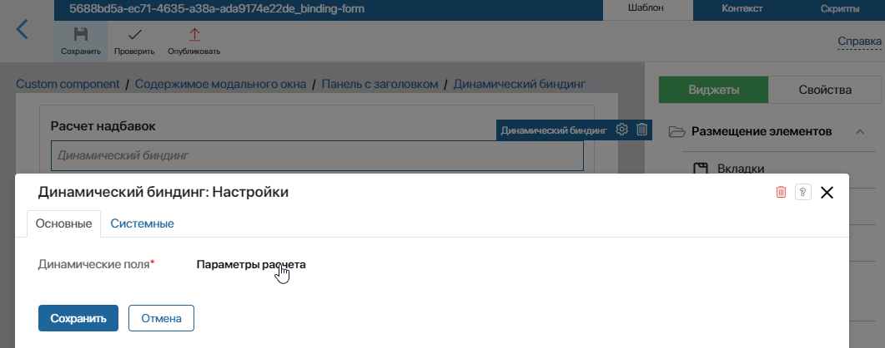
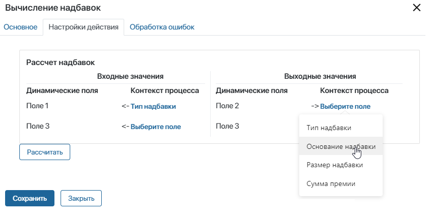

В пользовательском модуле можно создать исполняемый блок для бизнес-процесса. Если разместить такой графический элемент на схеме процесса, он будет выполнять определённую операцию: настроенный скрипт, вызов процесса или делегированное действие. При включённом модуле блок появляется в дизайнере бизнес-процессов на вкладке Интеграции и может использоваться в любом пользовательском процессе. При этом действие, настроенное в блоке, работает только с включённым модулем. Если запустить экземпляр процесса с выключенным модулем, пользователь получит оповещение об ошибке на этапе выполнения блока.
У таких операций есть ещё ряд особенностей:
- атрибуты блока, в котором настроено действие, сопоставляются с контекстными переменными процесса;
- блок типа Вызов процесса отличается от блока типа Запуск процесса;
- действия, созданные в модуле, можно обновить. При этом устаревшие блоки останутся рабочими в уже созданных процессах.
Сопоставление контекста действия и процесса (биндинг)
Для выполнения пользовательского действия его контекст сопоставляется с контекстом процесса, в котором оно применяется. Когда действие настраивается в модуле, на вкладке Контекст создаются входные и выходные атрибуты. Затем эти атрибуты сопоставляются с переменными процесса, в который добавляется блок с настроенным действием.
Начните с создания атрибутов в контексте действия, созданного в модуле:
- Перейдите в настройки модуля на вкладку Действия в БП и добавьте новое действие или откройте уже созданное, нажав его название
- В настройках действия на вкладке Контекст задайте входные и выходные параметры:
- Входные параметры — заполняются до выполнения действия. В них передаются данные из бизнес-процесса, в котором используется действие;
- Выходные параметры — заполняются после выполнения действия. Передаются из действия в контекст бизнес-процесса, или напрямую в поля приложения, используемого в процессе.
- Отметьте, какие переменные являются входными и выходными.
- Сохраните контекст и опубликуйте действие.
После добавления действия на схему процесса, вы сможете сопоставить заданные переменные с контекстом процесса. Для этого на схеме бизнес-процесса:
- Дважды нажмите на пользовательском действии или добавьте новое с правой панели.
- На вкладке Основное в поле Присвоить выходные атрибуты в укажите, куда записать результат исполнения блока:
- в контекстные переменные бизнес-процесса;
- в поля приложения, добавленного в контекст бизнес-процесса.
Подробнее про настройку блока в дизайнере бизнес-процессов читайте в статье «Блок „Действие в БП“».
- Перейдите на вкладку Входные и выходные атрибуты.
- Откроется окно с формой сопоставления. Для каждого входного и выходного атрибута блока выберите переменную процесса. Тогда в эти переменные будут передаваться значения из действия, созданного в модуле. Во входные переменные запишутся данные для выполнения настроенного в блоке действия, а в выходные — результат. Сопоставить можно переменные одного типа.
- Для завершения настройки нажмите Сохранить.
Изменить форму сопоставления
Вы можете создать свою форму сопоставления. Для этого на вкладке Контекст скрипта, вызова процесса или делегированного действия нажмите кнопку Создать форму. Важно: после того, как форма будет создана, вернуться к базовой форме будет нельзя. Откроется окно с предупреждением об этом, и вы сможете либо продолжить, либо отменить изменение формы.

Нажмите кнопку ОК, чтобы перейти в дизайнер интерфейсов для создания формы.
Когда форма будет создана, в дизайнере бизнес-процессов в настройках действия вместо вкладки Входные и выходные атрибуты появится вкладка Настройки действия. На ней будет отображена настроенная вами форма.
Создание входных и выходных переменных с помощью скрипта
Входные и выходные переменные пользовательского действия можно создавать на форме сопоставления с помощью скрипта.
начало внимание
Создание переменных с помощью скрипта возможно только для пользовательских действий типа Скрипт.
конец внимание
Чтобы создавать переменные с помощью скрипта:
- На вкладке Действия в БП пользовательского модуля создайте действие типа Скрипт или выберите ранее созданное действие.
- Создайте в действии свою форму сопоставления, как описано выше, и откройте ее.
- Перейдите на вкладку Шаблон и с правой панели вынесите на форму виджет Динамический биндинг.
- На вкладке Контекст формы создайте переменную типа Произвольный тип, в которую будет записываться набор входных и выходных переменных.
- Сохраните и опубликуйте форму.
- Чтобы контекстная переменная стала доступна в скрипте, закройте форму и откройте снова, нажав кнопку Изменить форму на вкладке Контекст действия.
- Откройте настройки виджета Динамический биндинг и на вкладке Основные в опции Динамические поля выберите переменную, созданную на шаге 4. Сохраните настройки виджета.

- На вкладке Скрипты формы разместите клиентский скрипт, который будет создавать входные и выходные переменные и сохранять их в ранее созданную переменную типа Произвольный тип:
async function FillOut(): Promise<void> {
ViewContext.data.bindings =
{
'field1': {name: 'Поле 1', type: DynamicFieldType.String, input: true,},
'field2': {name: 'Поле 2', type: DynamicFieldType.String, output: true,},
'field3': {name: 'Поле 3', type: DynamicFieldType.File, input: true, output: true,},
}
}
- Настройте параметры запуска скрипта. Скрипт можно запускать с помощью управляющего элемента на форме, например, кнопки, или при наступлении какого-либо события. Пример текста скрипта и настройки запуска приведён в «ELMA365 Community».
- Сохраните и опубликуйте форму сопоставления.
- После того как вы определили переменную, к ней можно обратиться на вкладке Скрипты в действии бизнес‑процесса. Например, вы можете задать переменной значение:
async function action(): Promise {
Context.data['bindings.field2'] = `Значение переменной`;
}
Когда вы откроете действие на схеме бизнес-процесса и перейдёте на вкладку Настройки, динамические поля с входными и выходными параметрами будут созданы автоматически, либо вы сможете запустить скрипт для их генерации. Подробнее о динамических полях читайте в справке ELMA365 TS SDK.

Различия действий «Вызов процесса» и «Запуск процесса»
Действия типа Вызов процесса и Запуск процесса похожи, но между ними есть ряд различий. Они приводятся в таблице ниже.
|
Вызов процесса пользовательское действие |
Запуск процесса системное действие |
Отслеживается в мониторе процессов |
Нет |
Да |
История выполнения каждого шага доступна пользователям |
Нет |
Да |
Асинхронный запуск |
Нет Переход к следующему шагу бизнес-процесса возможен только после выполнения действия типа Вызов процесса. |
Да Можно продолжить выполнение текущего процесса, не дожидаясь окончания дочернего. |
Отображение |
Не отображается в списке процессов в разделе Администрирование. Нельзя запустить напрямую в интерфейсе ELMA365, нажав на кнопку Запуск процесса. Выполняется только с помощью действия типа Вызов Процесса. |
Самостоятельный бизнес-процесс. Отображается в разделе Администрирование > Бизнес-процессы. |
Обновление действий
При обновлении модуля могут обновиться пользовательские действия. Устаревшие блоки нельзя будет добавить на вновь создаваемые схемы процессов. Они перестанут отображаться на панели инструментов в дизайнере процессов. Однако устаревшие действия продолжат работать без изменений в уже созданных процессах. Если вам потребуется внести изменения в логику процесса, например, изменить участников, то при публикации вы увидите предупреждение о том, что процесс содержит устаревшие блоки.